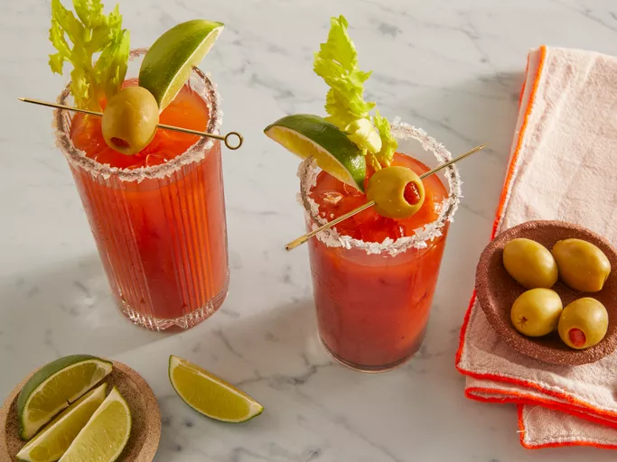

Blood Mary

A Bloody Mary is easy to make from scratch with vodka, tomato juice, and a few other simple ingredients. The spicy,
salty, and savory taste of this classic cocktail makes it perfect for brunch or other afternoon gatherings.
Ingredients
- Spicy Tomato Juice Cocktail: Use your favorite tomato-vegetable juice cocktail, like V8.
- Vodka: Vodka is the traditional alcohol in a Bloody Mary.
- Worcestershire Sauce: Worcestershire sauce gives the cocktail a savory, umami-rich flavor.
- Hot Pepper Sauce: Kick up the spice with hot pepper sauce.
- Salt and Pepper: Simple salt and pepper add extra flavor.
- Garnishes: This recipe calls for celery and garlic-stuffed green olives for a garnish — but you can add more if you like.
Steps
- Gather all ingredients.
- Pour salt onto a small plate. Moisten the rim of a glass and press into the salt. Fill the glass with ice cubes.
- Fill a cocktail shaker with ice cubes; add vegetable juice cocktail, vodka, Worcestershire sauce, hot pepper sauce, salt, and pepper. Cover and shake until the outside of shaker has frosted, about 20 seconds.
- Strain Bloody Mary into the prepared glass. Garnish with celery stalk and olives.
- Enjoy!
Home